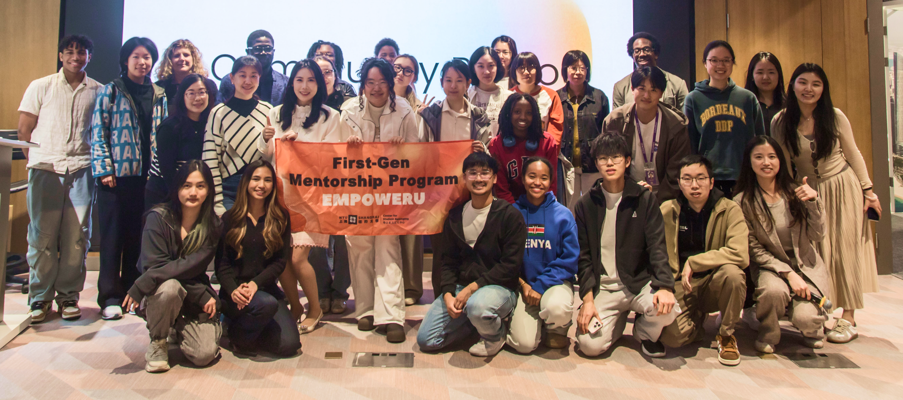

Unconventional.
No running water, chicks in the bedroom, eight moves before finishing school. Nothing about the path was obvious, and nothing since has been either.
My family built our house by hand, board by board, nail by nail. Growth was measured in pencil marks on a doorframe and the number of doors on the house. This is that chart, drawn out over thirty-four years.I grew up building a house by hand. I’ve been building schools ever since.Open to senior education, university strategy, and edtech leadership roles from July 2027.
Four years teaching secondary German and English in a rural public school, including Vietnamese refugee students and a behavioral support program. This is where my interest in EAL, SEN, and student welfare began.
Taught Cambridge English and IELTS from kindergarten through adult professionals in German-speaking Switzerland, deepening the bilingual and intercultural practice that shaped the next three decades.
Wrote the weekly Kat’s Window on Thailand column for Asia’s second-largest English-language newspaper. At the Mon refugee camp in Sangkhlaburi, on the Myanmar border, designed a 36-unit bilingual curriculum (Mon script and English) covering health, first aid, culture, English language skills, numeracy, daily life, and vocational topics. The curriculum was built from nothing for a stateless population with no existing teaching materials in their own language.
View the full Mon curriculum →Completed the MA TESOL at UNSW and taught across all year groups in Myanmar. Built a 60-hour teacher training program with the British Council and contributed to To Asia With Love, Honorable Mention in the 2005 Independent Book Publishing Awards.
Held combined academic and pastoral responsibility across the secondary school, leading EAL curriculum, student debate, international days, boarding, and CIS accreditation work.
Managed a team of 16 and built the school’s professional development infrastructure from scratch for 113 teachers. Created the Rolling PD program: a peer-led model in which every teacher delivered one in-house workshop per year and attended at least three others, driven by school development needs and the expanding English Across the Curriculum initiative. Completion was a prerequisite for external PD funding. All activity tracked through the BlueSky PD management system. Delivered a 12% rise in senior school attainment within one year, conducted 300+ admissions assessments annually, built the standardized assessment framework, and took a student language team to third in the world. Debate Fellow at Beihang and teaching fellow of the International World Schools Debate Academy.
Built whole-school student services from inception within twelve months, trained faculty in inclusive practice, CLIL, and differentiation, rebuilt admissions around data, established safeguarding protocols, and initiated the Stepping Stones Shanghai partnership in 2016.
Progressed from Adjunct Lecturer to Senior Lecturer. Designed four interdisciplinary first-year courses, led belonging and DEI work, built community-engaged learning, advised student leadership, and co-authored the EAP program’s strategic future.
The most important aspect of my work is whom I teach, not what I teach.
No running water, chicks in the bedroom, eight moves before finishing school. Nothing about the path was obvious, and nothing since has been either.
What that upbringing taught me. Cook with whatever’s on hand. Build a curriculum from nothing. Build a house from nothing. Build a department from nothing.
I say the thing. The room catches up later.
What directness and resourcefulness produce: systems that didn’t exist before I arrived and still run after I leave.
The mature version of building. Not one system, but six that feed each other. The hats are different. The head is the same.
About my students, about fairness, about doing it right. Quietly, consistently, and with receipts.
I look at hard things and don’t look away.
On paper, four jobs. In my week, one practice. Monday’s course design sends students into the community on Wednesday. The community work surfaces a belonging gap on Thursday. The gap rewrites the next course. The hats are different. The head is the same. When I leave a job, they replace me with two or three people.
Designs rigorous, future-facing academic experiences from a blank page, then builds the infrastructure that makes them work. Grounded in Students as Partners pedagogy: students hold real decision-making power over what they investigate, how they collaborate, and how they assess their own progress.
Moves beyond statements about belonging and builds the teaching, mentoring, and faculty systems that make it visible.

Designs experiential learning that produces public outcomes, not just assignments students forget after the semester ends.
Combines operational discipline with a clear moral purpose: better systems, stronger students, and decisions that can survive scrutiny.